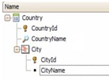
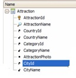
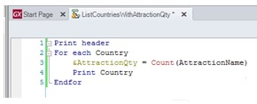

As of GeneXus X Evolution 3 we have changed the terminology. What we used to call formula base table, is now contextual table, and what we used to call navigated table is now formula base table.Example; Let’s suppose that a travel agency requires a listing to show all country names, and for each country, the number of tourist attractions available there.   To solve this request, we create a procedure object and call it ListCountriesWithAttractionsQty. In the Source, Inside the For each we write: print Country, with the purpose of showing the CountryName attribute in that printblock. We go to the layout and insert a new printblock which we call Country, and in it we add the CountryName attribute. We go back to the source. The For each so defined navigates the whole table of countries and shows the name of each country queried . The only thing left to do is solve the requirement that for each country the number of attractions in it is printed. How can we implement this? We will do the calculation with a local formula… Let’s define a variable and assign to it the result returned by a Count formula Inside the parentheses we must include an attribute from the ATTRACTION table, because we want to count attractions.  Formulas determine the table that will be navigated by the attribute(s) referenced inside the parentheses . In this case we included the AttractionName attribute because we wanted to count attractions and GeneXus understands it exactly that way. Since the formula is defined within a For each command, after the table that the formula navigates has been determined, GeneXus will analyze if it finds a relation between the base table of the For each and the table navigated by the formula . We can see that in this case, there is an attribute in common between the two navigations (CountryId), so, for each country navigated by the For each, its attractions will be counted So,
|
| Backlinks |
| Category:Formulas |